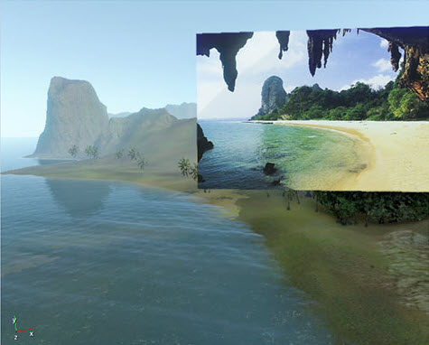
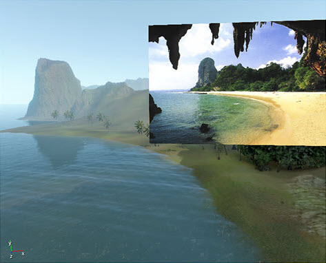

Overview
Applying a material with ReferenceImage shader to an object will force the engine to render that object without any shading and post-processing effects.
In other words, the object is colored by the given diffuse texture in such a way that no texture colors are altered in any way. This shader can be used to color an object in an image and use it as a reference when comparing between some concept art and the engine's output.
For example, consider the following image:
If the image is placed inside the editor (a box was used in this example) and rendered with the Illum shader, an incorrect output will occur due to post-processing effects such as tone mapping and fog.
Notice the bluish tint and the distorted brightness levels:

On the other hand, the Reference Image shader avoids those problems and reproduces accurate results:

sRGB
Diffuse textures in CRYENGINE are assumed to be stored in sRGB color space. This means that before the texels are stored in that texture, their values are adjusted by a gamma transfer function (roughly ?=1/2.2) effectively making the image look darker.
Due to this process, the engine converts the diffuse textures back to linear space (making them brighter again) during the loading in order to match the original colors.
On the other hand, data textures like normal bump maps are stored in a linear space from the start so if such texture is used with the Reference Image shader, the result will look brighter than the original image.
To avoid the pain in dealing with all of those issues, a special preset for the resource compiler was created. The ReferenceImage preset can be used to convert any image into a texture that will be correctly loaded by the engine while preserving the original quality and color space.
Details
In order to make sure that no alterations or post processing effects are applied to the reference image, the object is inserted into the EFSLIST_AFTER_POSTPROCESS rending list. In order to do that, AfterHDRPostProces and ForceDrawLast are specified in the shader script.